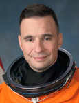

Lyndon B. Johnson Space Center
Houston, Texas 77058
|
National Aeronautics and Space Administration Lyndon B. Johnson Space Center Houston, Texas 77058 |
 |
Biographical Data |
||
Lee J. Archambault (Colonel, USAF, RET.)
NASA Astronaut (Former)
PERSONAL DATA: Born August 25, 1960 in Oak Park, Illinois, but considers Bellwood, Illinois to be his hometown. Married to the former Kelly Renee Raup; they have three children. Recreational interests include bicycling, weightlifting, and ice hockey. Archambault’s parents, Lee and Mary Ann Archambault, reside in Addison, Illinois. Archambault’s in-laws, Linda Post and Henry Raup, reside in Royal, Illinois, and Tavares, Florida, respectively.
EDUCATION: Graduated from Proviso West High School, Hillside, Illinois in 1978. Earned Bachelor of Science and Master of Science degrees in Aeronautical and Astronautical Engineering from the University of Illinois-Urbana in 1982 and 1984, respectively.
ORGANIZATIONS: University of Illinois Alumni Association
AWARDS: Military decorations include the Legion of Merit, Distinguished Flying Cross (1st Oak Leaf Cluster), Defense Meritorious Service Medal, Meritorious Service Medal (2nd Oak Leaf Cluster), Air Medal (2nd Oak Leaf Cluster), Aerial Achievement Medal (4th Oak Leaf Cluster), Air Force Commendation Medal (1st Oak Leaf Cluster), Air Force Achievement Medal, Southwest Asia Service Medal, and Kuwaiti Liberation Medal.
SPECIAL HONORS: Distinguished Graduate and Liethen-Tittle Award (top graduate) from the U.S. Air Force Test Pilot School. Distinguished Graduate from the U.S. Air Force Officer Training School. Graduated with Honors from the University of Illinois. University of Illinois Aeronautical/Astronautical Engineering Outstanding Recent Alumnus. Proviso West High School Hall of Fame inductee.
EXPERIENCE: Archambault received his commission as a second lieutenant in the United States Air Force from the Air Force Officer Training School at Lackland Air Force Base (AFB), Texas, in January 1985. He attended the Euro-Nato Joint Jet Pilot Training Program at Sheppard AFB, Texas, and earned his pilot wings in April 1986. He then reported to Cannon AFB, New Mexico, where he served as a combat ready F-111D pilot in the 27th Tactical Fighter Wing until April 1990. In May 1990, he transitioned to the F-117A Stealth Fighter in the 37th Tactical Fighter Wing at Nellis AFB/Tonopah Test Range, Nevada. From November 1990 through April 1991, he deployed to Saudi Arabia in support of Operation Desert Shield/Desert Storm and flew twenty-two combat missions in the F-117A during the Gulf War. He served a second F-117A tour in Saudi Arabia from August 1991 through December 1991 in support of post-Desert Storm peacekeeping efforts. In August 1992, Archambault was reassigned to Holloman AFB, New Mexico, where he served as an F-117A instructor pilot and operational test pilot for the 57th Wing. Archambault attended the U.S. Air Force Test Pilot School at Edwards AFB, California, from July 1994 until June 1995. In July 1995, he was assigned to the 46th Test Wing at the Air Force Development Test Center, Eglin AFB, Florida. There, he performed weapons developmental flight tests in all models of the F-16. Archambault was the assistant operations officer for the 39th Flight Test Squadron when he was selected for the astronaut program.
He has logged over 5,000 flight hours in more than 30 different aircraft.
NASA EXPERIENCE: Selected as a pilot by NASA in June 1998, Archambault reported for training in August 1998. Upon completion of astronaut candidate training in June 1999, Archambault was assigned to the Astronaut Office Shuttle Operations branch, where he worked on flight instrument upgrades that were incorporated into the shuttle in 2003. Archambault also served as an Astronaut Support Person at the Kennedy Space Center and performed duties as spacecraft communicator (CAPCOM).
Archambault completed his first flight in space as the pilot on STS-117 (June 8-22, 2007) and then served as the spacecraft commander for STS-119 (March 15-28, 2009). He logged a total of 27 days in space. Following his two missions in space, he concluded his duties at NASA as the Astronaut Office Exploration Branch Chief. Colonel Archambault retired from the United States Air Force in 2012 and resigned from NASA in March of 2013.
SPACE FLIGHT EXPERIENCE: STS-117 Atlantis (June 8-22, 2007) was the 118th shuttle mission and the 21st mission to visit the International Space Station. The successful construction mission delivered and installed the S3/S4 truss segment. It involved multiple EVAs performed by four astronauts. The mission also delivered and returned with an expedition crewmember. STS-117 returned to land at Edwards Air Force Base, California, having traveled 5.8 million miles in 14 days.
STS-119 Discovery (March 15-28, 2009) was the 125th shuttle mission and the 28th mission to the International Space Station. The successful construction mission delivered and installed the S6 truss segment and involved multiple EVAs performed by three astronauts. The mission also delivered and returned an expedition crewmember. STS-119 returned to land at the Kennedy Space Center, Florida, having traveled 5.3 million miles in 13 days.
MARCH 2013
This is the only version available from NASA. Updates must be sought from the above-named individual.